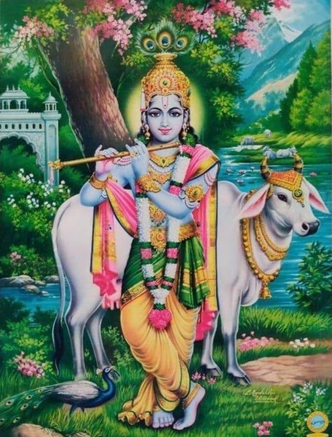

Shrimad Bhagwatam - Book 1 Chapter 33
॥ॐ॥
वसुदेवसुतं देवं कंसचाणूरमर्दनम् ।
देवकी परमानन्दं कृष्णं वन्दे जगद्गुरुम् ॥
Shrimad Bhagwatam - Book 1
Canto 10
Chapter 33
A Description of the Rasa Play
श्रीमद्भागवतमहापुराणम्
दशमः स्कन्धः
रासक्रीडा वर्णनं नाम त्रयस्त्रिंशः अध्यायः

(40 Shlokas)
श्री शुक उवाच
इत्थं भगवतो गोप्यः श्रुत्वा वाचः सुपेशलाः ।
जहुर्विरहजं तापं तदङ्गोपचिताशिषः ॥10.33.1॥
Word-by-word meaning: श्री शुकः उवाच Shri Shuka said, इत्थम् in this way, भगवतः of the Supreme Lord, गोप्यः the gopis, श्रुत्वा hearing, वाचः the words, सुपेशलाः very pleasing/charming, जहुः they abandoned, विरह-जम् born of separation, तापम् the distress, तत्-अङ्ग-उपचित-आशिषः those whose desires were fulfilled by the touch of His limbs
Anvaya: श्री शुकः उवाच — इत्थं भगवतः सुपेशलाः वाचः श्रुत्वा गोप्यः तदङ्गोपचिताशिषः (सत्यः) विरहजं तापं जहुः।
Literal meaning of the anvaya: श्री शुकः उवाच Shri Shuka said, इत्थं भगवतः सुपेशलाः वाचः श्रुत्वा Hearing these very charming words of the Supreme Lord in this manner, गोप्यः तदङ्गोपचिताशिषः the gopis with their desires being fulfilled by the contact of His limbs, विरहजं तापं जहुः gave up the distress born of separation.
Simple Meaning: Shri Shuka said: After hearing these beautiful and comforting words from the Supreme Lord, the gopis were relieved of the intense agony caused by their separation from Him. Their spiritual longings were fully satisfied by being in His presence and through the touch of His person.
तत्रारभत गोविन्दो रासक्रीडामनुव्रतैः ।
स्त्रीरत्नैरन्वितः प्रीतैरन्योन्याबद्धबाहुभिः ॥10.33.2॥
Word-by-word meaning: तत्र there, आरभत began, गोविन्दः Lord Govinda, रास-क्रीडाम् the Rasa dance, अनुव्रतैः by the faithful followers, स्त्री-रत्नैः with those jewels among women, अन्वितः joined, प्रीतैः who were satisfied/joyful, अन्योन्य-आबद्ध-बाहुभिः with their arms linked with one another
Anvaya: तत्र गोविन्दः अन्योन्याबद्धबाहुभिः प्रीतैः अनुव्रतैः स्त्रीरत्नैः अन्वितः रासक्रीडाम् आरभत।
Literal meaning of the anvaya: तत्र गोविन्दः There Lord Govinda, अन्योन्याबद्धबाहुभिः प्रीतैः with those who were joyful and had their arms linked with one another, अनुव्रतैः स्त्रीरत्नैः अन्वितः joined by those jewels among women who were His faithful followers, रासक्रीडाम् आरभत began the Rasa dance.
Simple Meaning: There, Lord Govinda began the festivities of the Rasa dance. He was joined by the gopis, the jewels among women, who were His faithful followers. Filled with joy, they all linked their arms together, and the Lord commenced the divine dance in their company.
रासोत्सवः सम्प्रवृत्तो गोपीमण्डलमण्डितः ।
योगेश्वरेण कृष्णेन तासां मध्ये द्वयोर्द्वयोः ।
प्रविष्टेन गृहीतानां कण्ठे स्वनिकटं स्त्रियः ॥10.33.3॥
Word-by-word meaning: रास-उत्सवः the festival of the Rasa dance, सम्प्रवृत्तः began, गोपी-मण्डल-मण्डितः adorned by the circle of gopis, योग-ईश्वरेण by the Master of all mystic power, कृष्णेन by Krishna, तासाम् of them, मध्ये in the middle, द्वयोः द्वयोः between every two (gopis), प्रविष्टेन having entered, गृहीतानाम् of those who were held, कण्ठे around the neck, स्व-निकटम् beside Himself, स्त्रियः the women
Anvaya: गोपीमण्डलमण्डितः रासोत्सवः सम्प्रवृत्तः। योगेश्वरेण कृष्णेन द्वयोः द्वयोः तासां मध्ये प्रविष्टेन कण्ठे गृहीतानां स्त्रियः स्वनिकटं (मेनिरे)।
Literal meaning of the anvaya: गोपीमण्डलमण्डितः रासोत्सवः सम्प्रवृत्तः The festival of the Rasa dance, adorned by the circle of gopis, began. योगेश्वरेण कृष्णेन द्वयोः द्वयोः तासां मध्ये प्रविष्टेन By Lord Krishna, the Master of all mystic power, who entered between every two gopis, कण्ठे गृहीतानां स्त्रियः स्वनिकटं each of the women, whose necks were embraced, felt Him to be right next to her.
Simple Meaning: The festival of the Rasa dance commenced, beautifully adorned by the circle of gopis. Lord Krishna, the Master of all mystic power, manifested Himself between every two gopis and placed His arms around their necks. In this way, each woman felt that the Lord was standing right beside her alone.
यं मन्येरन् नभस्तावद् विमानशतसङ्कुलम् ।
दिवौकसां सदाराणामौत्सुक्यापहृतात्मनाम् ॥10.33.4॥
Word-by-word meaning: यम् which (Rasa dance), मन्येरन् they thought/perceived, नभः the sky, तावत् then, विमान-शत-सङ्कुलम् crowded with hundreds of airplanes, दिव-ओकसाम् of the denizens of heaven (the demigods), स-दाराणाम् along with their wives, औत्सुक्य-अपहृत-आत्मनाम् whose minds were carried away by eagerness
Anvaya: तावत् औत्सुक्यापहृतात्मनां सदाराणां दिवौकसां विमानशतसङ्कुलं नभः (बभूव), यं मन्येरन्।
Literal meaning of the anvaya: तावत् औत्सुक्यापहृतात्मनां सदाराणां दिवौकसां At that time, the denizens of heaven with their wives, whose minds were completely captivated by eagerness, विमानशतसङ्कुलं नभः (filled) the sky with hundreds of celestial airplanes, यं मन्येरन् as they watched that (Rasa dance).
Simple Meaning: At that moment, the sky became crowded with hundreds of celestial airplanes belonging to the demigods and their wives. Their minds were completely overcome with curiosity and eagerness to witness the divine Rasa dance, and they gathered in the heavens to gaze upon the spectacle.
ततो दुन्दुभयो नेदुर्निपेतुः पुष्पवृष्टयः ।
जगुर्गन्धर्वपतयः सस्त्रीकास्तद्यशोऽमलम् ॥10.33.5॥
Word-by-word meaning: ततः then, दुन्दुभयः kettledrums, नेदुः sounded, निपेतुः fell, पुष्प-वृष्टयः showers of flowers, जगुः sang, गन्धर्व-पतयः the leaders of the Gandharvas, स-स्त्रीकाः along with their wives, तत्-यशः His glories, अमलम् spotless/pure
Anvaya: ततः दुन्दुभयः नेदुः, पुष्पवृष्टयः निपेतुः, सस्त्रीकाः गन्धर्वपतयः अमलं तद्यशः जगुः।
Literal meaning of the anvaya: ततः दुन्दुभयः नेदुः Then the kettledrums resounded, पुष्पवृष्टयः निपेतुः showers of flowers fell, सस्त्रीकाः गन्धर्वपतयः and the leaders of the Gandharvas along with their wives, अमलं तद्यशः जगुः sang those spotless glories of Him.
Simple Meaning: Then, the kettledrums of the heavens began to resound and flowers fell in continuous showers. The leading Gandharvas, accompanied by their wives, sang beautifully about the pure glories of Lord Krishna.
वलयानां नूपुराणां किङ्किणीनां च योषिताम् ।
सप्रियाणामभूच्छब्दस्तुमुलो रासमण्डले ॥10.33.6॥
Word-by-word meaning: वलयानाम् of the bangles, नूपुराणाम् of the ankle bells, किङ्किणीनाम् of the small waist-bells, च and, योषिताम् of the women, स-प्रियाणाम् along with their beloved (Krishna), अभूत became, शब्दः a sound, तुमुलः tumultuous/loud, रास-मण्डले in the circle of the Rasa dance
Anvaya: रासमण्डले सप्रियाणां योषितां वलयानां नूपुराणां किङ्किणीनां च तुमुलः शब्दः अभूत्।
Literal meaning of the anvaya: रासमण्डले In the circle of the Rasa dance, सप्रियाणां योषितां of the women who were with their beloved Krishna, वलयानां नूपुराणां किङ्किणीनां च of the bangles, ankle bells, and waist-bells, तुमुलः शब्दः अभूत् a loud, tumultuous sound arose.
Simple Meaning: Within the circle of the Rasa dance, as the gopis moved in harmony with their beloved Krishna, a magnificent and loud sound was created by the jingling of their bangles, ankle bells, and the small bells on their waistbands.
तत्रातिशुशुभे ताभिर्भगवान् देवकीसुतः।
मध्ये मणीनां हैमानां महामरकतो यथा ॥10.33.7॥
Word-by-word meaning: तत्र there, अति-शुशुभे shone brilliantly, ताभिः with them (the gopis), भगवान् the Supreme Lord, देवकी-सुतः the son of Devaki, मध्ये in the middle, मणीनाम् of beads/gems, हैमानाम् golden, महा-मरकतः a large emerald, यथा just as
Anvaya: तत्र ताभिः भगवान् देवकीसुतः, हैमानां मणीनां मध्ये महामरकतः यथा, अतिशुशुभे।
Literal meaning of the anvaya: तत्र ताभिः भगवान् देवकीसुतः There, with them, the Supreme Lord, the son of Devaki, हैमानां मणीनां मध्ये महामरकतः यथा just like a large emerald in the midst of golden beads, अतिशुशुभे shone most brilliantly.
Simple Meaning: In the midst of the gopis, the Supreme Lord Krishna appeared exceptionally beautiful. Just as a magnificent green emerald sparkles with intense color when set in the middle of a golden necklace, Lord Krishna shone resplendently surrounded by the golden-hued gopis.
पादन्यासैर्भुजविधुतिभिः सस्मितैर्भ्रूविलासै र्भज्यन्मध्यैश्चलकुचपटैः कुण्डलैर्गण्डलोलैः ।
स्विद्यन्मुख्यः कबररशनाग्रन्थयः कृष्णवध्वो गायन्त्यस्तं तडित इव ता मेघचक्रे विरेजुः ॥10.33.8॥
Word-by-word meaning: पाद-न्यासैः with the movements of their feet, भुज-विधुतिभिः with the waving of their arms, स-स्मितैः with smiles, भ्रू-विलासैः with the play of their eyebrows, भज्यत्-मध्यैः with waistlines bending, चल-कुच-पटैः with their garments moving over their breasts, कुण्डलैः with earrings, गण्ड-लोलैः swinging on their cheeks, स्विद्यत्-मुख्यः whose faces were perspiring, कबर-रशना-ग्रन्थयः the knots of whose hair and waistbands (loosening), कृष्ण-वध्वः the wives (gopis) of Krishna, गायन्त्यः singing, तम् about Him, तडितः lightning, इव like, ताः they, मेघ-चक्रे in a circle of clouds, विरेजुः shone
Anvaya: पादन्यासैः भुजविधुतिभिः सस्मितैः भ्रूविलासैः भज्यन्मध्यैः चलकुचपटैः गण्डलोलैः कुण्डलैः स्विद्यन्मुख्यः कबररशनाग्रन्थयः तं गायन्त्यः ताः कृष्णवध्वः मेघचक्रे तडितः इव विरेजुः।
Literal meaning of the anvaya: पादन्यासैः भुजविधुतिभिः With the stepping of their feet and the waving of their arms, सस्मितैः भ्रूविलासैः भज्यन्मध्यैः with smiling play of eyebrows and bending waists, चलकुचपटैः गण्डलोलैः कुण्डलैः with moving garments and earrings swinging on their cheeks, स्विद्यन्मुख्यः कबररशनाग्रन्थयः with perspiring faces and hair and waist-knots loosening, तं गायन्त्यः ताः कृष्णवध्वः these wives of Krishna singing about Him, मेघचक्रे तडितः इव विरेजुः shone like flashes of lightning in a circle of clouds.
Simple Meaning: As the gopis danced with Krishna, they moved their feet in rhythm, waved their arms, and smiled with playful eyebrows. Their waists bent with the dance, their dresses fluttered, and their earrings swung against their cheeks. With perspiring faces and their hair and waist-bands becoming loose, these young women sang the glories of Krishna. They appeared as brilliant as streaks of lightning shimmering within a circle of dark clouds.
उच्चैर्जगुर्नृत्यमाना रक्तकण्ठ्यो रतिप्रियाः ।
कृष्णाभिमर्शमुदिता यद्गीतेनेदमावृतम् ॥10.33.9॥
Word-by-word meaning: उच्चैः loudly, जगुः they sang, नृत्यमानाः while dancing, रक्त-कण्ठ्यः having colored/sweet voices, रति-प्रियाः who are fond of their lover (Krishna), कृष्ण-अभिमर्श-मुदिताः delighted by the touch of Krishna, यत्-गीतेन by whose singing, इदम् this (entire universe), आवृतम् was filled/covered
Anvaya: नृत्यमानाः रक्तकण्ठ्यः रतिप्रियाः कृष्णाभिमर्शमुदिताः उच्चैः जगुः, यद्गीतेन इदम् आवृतम्।
Literal meaning of the anvaya: नृत्यमानाः रक्तकण्ठ्यः While dancing, those with sweet voices, रतिप्रियाः कृष्णाभिमर्शमुदिताः who are dear to their lover and delighted by the touch of Krishna, उच्चैः जगुः sang loudly, यद्गीतेन इदम् आवृतम् by which singing this entire universe became filled.
Simple Meaning: While dancing, the gopis sang loudly with beautiful, sweet voices. Being deeply attached to their beloved Krishna and feeling immense joy from His divine touch, they poured their hearts into their song. Their singing was so powerful and resonant that it seemed to fill the entire universe.
काचित् समं मुकुन्देन स्वरजातीरमिश्रिताः ।
उन्निन्ये पूजिता तेन प्रीयता साधु साध्विति ।
तदेव ध्रुवमुन्निन्ये तस्यै मानं च बह्वदात् ॥10.33.10॥
Word-by-word meaning: काचित् a certain gopi, समम् along with, मुकुन्देन Mukunda, स्वर-जातीः the scales of musical notes, अमिश्रिताः pure/unmixed, उन्निन्ये raised/sang, पूजिता honored, तेन by Him, प्रीयता who was pleased, साधु साधु इति saying "excellent, excellent", तत् एव that same (meter), ध्रुवम् the rhythmic drum-beat, उन्निन्ये raised/matched, तस्यै to her, मानम् respect/honor, च and, बहु greatly/much, अदात् He gave
Anvaya: काचित् मुकुन्देन समं अमिश्रिताः स्वरजातीः उन्निन्ये। तेन प्रीयता "साधु साधु" इति पूजिता (सा), तत् एव ध्रुवम् उन्निन्ये, (कृष्णः) तस्यै बहु मानं च अदात्।
Literal meaning of the anvaya: काचित् मुकुन्देन समं अमिश्रिताः स्वरजातीः उन्निन्ये A certain gopi, along with Mukunda, sang the pure scales of musical notes. तेन प्रीयता "साधु साधु" इति पूजिता Being pleased by her, He honored her by saying "excellent, excellent", तत् एव ध्रुवम् उन्निन्ये she then matched that same rhythmic beat, (कृष्णः) तस्यै बहु मानं च अदात् and Krishna gave her much great respect.
Simple Meaning: One particular gopi began singing the pure musical scales in unison with Lord Mukunda. Krishna was so pleased with her performance that He praised her, calling out, "Excellent! Well done!" She then demonstrated her mastery by perfectly following the rhythmic beat, and the Lord responded by showing her even greater honor and appreciation.
काचिद् रासपरिश्रान्ता पार्श्वस्थस्य गदाभृतः ।
जग्राह बाहुना स्कन्धं श्लथद्वलयमल्लिका ॥10.33.11॥
Word-by-word meaning: काचित् a certain gopi, रास-परिश्रान्ता fatigued from the Rasa dance, पार्श्व-स्थस्य of Him who was standing by her side, गदा-भृतः of the wielder of the club (Krishna), जग्राह took/grasped, बाहुना with her arm, स्कन्धम् the shoulder, श्लथत्-वलय-मल्लिका whose bangles and jasmine flowers were loosening
Anvaya: रासपरिश्रान्ता श्लथद्वलयमल्लिका काचित् पार्श्वस्थस्य गदाभृतः स्कन्धं बाहुना जग्राह।
Literal meaning of the anvaya: रासपरिश्रान्ता श्लथद्वलयमल्लिका काचित् A certain gopi, fatigued by the Rasa dance and whose bangles and jasmine flowers were slipping, पार्श्वस्थस्य गदाभृतः स्कन्धं of the wielder of the club who stood by her side, the shoulder, बाहुना जग्राह grasped with her arm.
Simple Meaning: One gopi became quite tired from the intense movement of the Rasa dance. As her bangles and the jasmine flowers in her hair began to loosen and slip, she reached out and placed her arm around the shoulder of Lord Krishna, who was standing right beside her.
तत्रैकांसगतं बाहुं कृष्णस्योत्पलसौरभम् ।
चन्दनालिप्तमाघ्राय हृष्टरोमा चुचुम्ब ह ॥10.33.12॥
Word-by-word meaning: तत्र there, एका one (gopi), अंस-गतम् placed upon her shoulder, बाहुम् the arm, कृष्णस्य of Krishna, उत्पल-सौरभम् having the fragrance of a blue lotus, चन्दन-आलिप्तम् smeared with sandalwood paste, आघ्राय smelling, हृष्ट-रोमा her hair standing on end (out of joy), चुचुम्ब kissed, ह indeed
Anvaya: तत्र एका अंसगतं उत्पलसौरभं चन्दनालिप्तं कृष्णस्य बाहुं आघ्राय हृष्टरोमा चुचुम्ब ह।
Literal meaning of the anvaya: तत्र एका There, one gopi, अंसगतं उत्पलसौरभं चन्दनालिप्तं कृष्णस्य बाहुं आघ्राय smelling the arm of Krishna which was placed on her shoulder and which possessed the fragrance of a blue lotus and was smeared with sandalwood, हृष्टरोमा चुचुम्ब ह with her hair standing on end in ecstasy, she kissed it.
Simple Meaning: During the dance, one gopi found Krishna's arm resting upon her shoulder. Smelling the divine fragrance of that arm, which was anointed with sandalwood paste and scented like a blue lotus, she became so overwhelmed with joy that her hair stood on end, and she lovingly kissed His arm.
कस्याश्चिन्नाट्यविक्षिप्तकुण्डलत्विषमण्डितम् ।
गण्डं गण्डे सन्दधत्या अदात्ताम्बूलचर्वितम् ॥10.33.13॥
Word-by-word meaning: कस्याश्चित् of a certain gopi, नाट्य-विक्षिप्त-कुण्डल-त्विष-मण्डितम् adorned by the reflection of earrings swinging due to the dance, गण्डम् the cheek, गण्डे against the cheek (of Krishna), सन्दधत्याः of her who was placing, अदात् He gave, ताम्बूल-चर्वितम् the chewed betel nut
Anvaya: नाट्यविक्षिप्तकुण्डलत्विषमण्डितं गण्डं गण्डे सन्दधत्याः कस्याश्चित् (कृष्णः) ताम्बूलचर्वितम् अदात्।
Literal meaning of the anvaya: नाट्यविक्षिप्तकुण्डलत्विषमण्डितं गण्डं Her cheek, which was adorned by the glow of earrings tossing from the movements of the dance, गण्डे सन्दधत्याः कस्याश्चित् of that certain gopi who was pressing her cheek against His own, (कृष्णः) ताम्बूलचर्वितम् अदात् Krishna gave the betel nut He had chewed.
Simple Meaning: As they danced, one gopi pressed her cheek against Krishna's cheek. Her face was beautifully illuminated by the shimmering of her earrings, which swung back and forth from her rhythmic movements. To her, Lord Krishna gave the remnants of the betel nut He had been chewing.
नृत्यन्ती गायती काचित् कूजन्नूपुरमेखला ।
पार्श्वस्थाच्युतहस्ताब्जं श्रान्ताधात् स्तनयोः शिवम् ॥10.33.14॥
Word-by-word meaning: नृत्यन्ती dancing, गायती singing, काचित् a certain gopi, कूजत्-नूपुर-मेखला whose ankle bells and waist-bells were tinkling, पार्श्व-स्थ-अच्युत-हस्त-अब्जम् the lotus hand of Achyuta (Krishna) standing by her side, श्रान्ता being fatigued, अधात् placed, स्तनयोः on her breasts, शिवम् auspicious
Anvaya: नृत्यन्ती गायती कूजन्नूपुरमेखला काचित् श्रान्ता पार्श्वस्थाच्युतहस्ताब्जं शिवं स्तनयोः अधात्।
Literal meaning of the anvaya: नृत्यन्ती गायती कूजन्नूपुरमेखला काचित् A certain gopi, who was dancing and singing and whose ankle bells and waistbands were tinkling, श्रान्ता being fatigued, पार्श्वस्थाच्युतहस्ताब्जं शिवं the auspicious lotus hand of Achyuta who stood beside her, स्तनयोः अधात् placed upon her breasts.
Simple Meaning: While dancing and singing to the rhythm of her tinkling ornaments, one gopi became exhausted. To find relief from her fatigue, she took the auspicious lotus hand of Lord Krishna, who was standing right next to her, and placed it against her chest.
गोप्यो लब्ध्वाच्युतं कान्तं श्रिय एकान्तवल्लभम् ।
गृहीतकण्ठ्यस्तदोर्भ्यां गायन्त्यस्तं विजह्रिरे ॥10.33.15॥
Word-by-word meaning: गोप्यः the gopis, लब्ध्वा having obtained, अच्युतम् Lord Achyuta, कान्तम् as their lover, श्रियः of the goddess of fortune, एकान्त-वल्लभम् the exclusive/dearmost lover, गृहीत-कण्ठ्यः whose necks were embraced, तत्-दोर्भ्याम् by His arms, गायन्त्यः singing, तम् about Him, विजह्रिरे they took pleasure/sported
Anvaya: श्रियः एकान्तवल्लभम् अच्युतं कान्तं लब्ध्वा तदोर्भ्यां गृहीतकण्ठ्यः गोप्यः तं गायन्त्यः विजह्रिरे।
Literal meaning of the anvaya: श्रियः एकान्तवल्लभम् अच्युतं कान्तं लब्ध्वा Having obtained as their lover, Lord Achyuta, who is the exclusive dearmost beloved of the goddess of fortune, तदोर्भ्यां गृहीतकण्ठ्यः गोप्यः the gopis, whose necks were embraced by His arms, तं गायन्त्यः विजह्रिरे sported while singing about Him.
Simple Meaning: The gopis had now obtained as their own lover Lord Achyuta, who is the exclusive dearmost beloved of the goddess of fortune. With His arms draped around their necks, they moved in the joy of the dance, singing His praises and enjoying His divine company.
कर्णोत्पलालकविटङ्ककपोलघर्मवक्त्रश्रियो वलयनूपुरघोषवाद्यैः ।
गोप्यः समं भगवता ननृतुः स्वकेशस्रस्तस्रजो भ्रमरगायकरासगोष्ठ्याम् ॥10.33.16॥
Word-by-word meaning: कर्ण-उत्पल-अलक-विटङ्क-कपोल-घर्म-वक्त्र-श्रियः those the beauty of whose faces was enhanced by lotus flowers on their ears, locks of hair, and drops of perspiration on their charming cheeks, वलय-नूपुर-घोष-वाद्यैः with the musical accompaniment of the sound of their bangles and ankle bells, गोप्यः the gopis, समम् together, भगवता with the Supreme Lord, ननृतुः danced, स्व-केश-स्रस्त-स्रजः whose flower garlands were falling from their hair, भ्रमर-गायक-रास-गोष्ठ्याम् in the assembly of the Rasa dance where bees acted as the singers
Anvaya: कर्णोत्पलालकविटङ्ककपोलघर्मवक्त्रश्रियः स्वकेशस्रस्तस्रजः गोप्यः वलयनूपुरघोषवाद्यैः भ्रमरगायकरासगोष्ठ्यां भगवता समं ननृतुः।
Literal meaning of the anvaya: कर्णोत्पलालकविटङ्ककपोलघर्मवक्त्रश्रियः Those whose facial beauty was decorated by ear-lotuses, locks of hair, and perspiration on their beautiful cheeks, स्वकेशस्रस्तस्रजः गोप्यः the gopis whose flower garlands were slipping from their hair, वलयनूपुरघोषवाद्यैः with the instrumental music of the tinkling of their bangles and ankle bells, भ्रमरगायकरासगोष्ठ्यां in the assembly of the Rasa dance where bees were singing, भगवता समं ननृतुः danced together with the Supreme Lord.
Simple Meaning: The gopis danced with the Supreme Lord in the circle of the Rasa dance, where humming bees provided the background music. The beauty of their faces was heightened by the lotus flowers behind their ears, the stray locks of hair falling over their faces, and the beads of sweat on their charming cheeks. As they moved to the rhythmic sound of their own bangles and ankle bells, the flower garlands in their hair began to loosen and fall.
एवं परिष्वङ्गकराभिमर्शस्निग्धेक्षणोद्दामविलासहासैः ।
रेमे रमेशो व्रजसुन्दरीभिर्यथार्भकः स्वप्रतिबिम्बविभ्रमः ॥10.33.17॥
Word-by-word meaning: एवम् in this way, परिष्वङ्ग-कर-अभिमर्श-स्निग्ध-ईक्षण-उद्दाम-विलास-हासैः with embraces, touches of the hands, affectionate glances, and unrestrained playful smiles, रेमे sported/enjoyed, रमा-ईशः the Lord of the goddess of fortune, व्रज-सुन्दरीभिः with the beautiful women of Vraja, यथा just as, अर्भकः a child, स्व-प्रतिबिम्ब-विभ्रमः playing with his own reflections
Anvaya: एवं परिष्वङ्गकराभिमर्शस्निग्धेक्षणोद्दामविलासहासैः रमेशः व्रजसुन्दरीभिः रेमे, यथा अर्भकः स्वप्रतिबिम्बविभ्रमः।
Literal meaning of the anvaya: एवं परिष्वङ्गकराभिमर्शस्निग्धेक्षणोद्दामविलासहासैः In this way, with embraces, touches of the hands, loving glances, and bold playful smiles, रमेशः व्रजसुन्दरीभिः रेमे the Lord of Rama (the goddess of fortune) sported with the beauties of Vraja, यथा अर्भकः स्वप्रतिबिम्बविभ्रमः just as a child plays with his own reflections.
Simple Meaning: In this manner, through embraces, the touch of His hands, tender glances, and broad, playful smiles, the Lord of the goddess of fortune enjoyed the company of the beautiful gopis of Vraja. He played with them just as a child plays freely with his own reflections in a mirror or water.
तदङ्गसङ्गप्रमुदाकुलेन्द्रियाः केशान् दुकूलं कुचपट्टिकां वा ।
नाञ्जः प्रतिव्योढुमलं व्रजस्त्रियो विस्रस्तमालाभरणाः कुरूद्वह ॥10.33.18॥
Word-by-word meaning: तत्-अङ्ग-सङ्ग-प्रमुद-आकुल-इन्द्रियाः those whose senses were overwhelmed by the joy of contact with His body, केशान् their hair, दुकूलम् their silken saris, कुच-पट्टिकाम् the cloth covering their breasts (bodices), वा or, न not, अञ्जः easily/at all, प्रतिव्योढुम् to dress/rearrange/properly hold, अलम् were able, व्रज-स्त्रियः the women of Vraja, विस्रस्त-माला-आभरणाः whose flower garlands and ornaments were disarrayed/falling, कुरु-उद्वह O best of the Kurus (Parikshit)
Anvaya: (हे) कुरूद्वह! तदङ्गसङ्गप्रमुदाकुलेन्द्रियाः विस्रस्तमालाभरणाः व्रजस्त्रियः केशान् दुकूलं कुचपट्टिकां वा अञ्जः प्रतिव्योढुं न अलम् (बभूवुः)।
Literal meaning of the anvaya: (हे) कुरूद्वह! O best of the Kurus! तदङ्गसङ्गप्रमुदाकुलेन्द्रियाः their senses overwhelmed by the bliss of touching His limbs, विस्रस्तमालाभरणाः with their garlands and ornaments slipping, व्रजस्त्रियः the women of Vraja, केशान् दुकूलं कुचपट्टिकां वा (their) hair, silken garments, or bodices, अञ्जः प्रतिव्योढुं न अलम् were not at all able to keep in place.
Simple Meaning: O best of the Kurus, the gopis were so completely lost in the ecstasy of physical contact with Krishna that they became unaware of their own bodies. Their flower garlands and jewelry slipped, and they were unable to even notice or rearrange their hair, their silken saris, or their bodices as they fell into disarray.
कृष्णविक्रीडितं वीक्ष्य मुमुहुः खेचरस्त्रियः ।
कामार्दिताः शशाङ्कश्च सगणो विस्मितोऽभवत् ॥10.33.19॥
Word-by-word meaning: कृष्ण-विक्रीडितम् the playful sporting of Krishna, वीक्ष्य seeing, मुमुहुः became bewildered/fainted, खेचर-स्त्रियः the wives of the denizens of heaven (demigods), काम-अर्दिताः distressed by desire, शशाङ्कः the moon, च and, स-गणः along with his followers (the stars), विस्मितः astonished, अभवत् became
Anvaya: कृष्णविक्रीडितं वीक्ष्य कामार्दिताः खेचरस्त्रियः मुमुहुः, सगणः शशाङ्कः च विस्मितः अभवत्।
Literal meaning of the anvaya: कृष्णविक्रीडितं वीक्ष्य Seeing the playful sporting of Krishna, कामार्दिताः खेचरस्त्रियः मुमुहुः the wives of the heavenly demigods became overwhelmed with desire and lost their composure, सगणः शशाङ्कः च विस्मितः अभवत् and the moon, together with his constellation of stars, became struck with wonder.
Simple Meaning: Upon witnessing Krishna’s divine play, the wives of the demigods watching from their celestial airplanes were so overcome by the beauty of the scene that they lost their self-control. Even the moon, accompanied by the stars, was stunned and captivated by the Rasa dance.
कृत्वातावन्तमात्मानं यावतीर्गोपयोषितः ।
रेमे स भगवांस्ताभिरात्मारामोऽपि लीलया ॥10.33.20॥
Word-by-word meaning: कृत्वा having made, तावन्तम् that many, आत्मानम् Himself, यावतीः as many as, गोप-योषितः the cowherd women, रेमे sported, सः He, भगवान् the Supreme Lord, ताभिः with them, आत्मा-रामः self-satisfied, अपि although, लीलया as a pastime
Anvaya: सः भगवान् आत्मारामः अपि, यावतीः गोपयोषितः (आसन्), आत्मानं तावन्तं कृत्वा, ताभिः (सह) लीलया रेमे।
Literal meaning of the anvaya: सः भगवान् He, the Supreme Lord, आत्मारामः अपि although perfectly self-satisfied within Himself, यावतीः गोपयोषितः as many as there were gopis, आत्मानं तावन्तं कृत्वा making Himself into that many forms, ताभिः (सह) लीलया रेमे sported with them as a divine pastime.
Simple Meaning: Even though Lord Krishna is Atmarama—completely self-satisfied and needing nothing outside of Himself—He expanded His body into as many forms as there were gopis. In this way, He danced with each one of them simultaneously, making every gopi feel He was with her alone, simply as a display of His divine play (lila).
तासामतिविहारेण श्रान्तानां वदनानि सः ।
प्रामृजत् करुणः प्रेम्णा शन्तमेनाङ्गपाणिना ॥10.33.21॥
Word-by-word meaning: तासाम् of them (the gopis), अति-विहारेण by the intense sporting/dancing, श्रान्तानाम् who were fatigued, वदनानि the faces, सः He (Krishna), प्रामृजत् wiped, करुणः the merciful, प्रेम्णा with love, शन्तमेन which is most soothing/comforting, अङ्ग O dear one (Parikshit), पाणिना with His hand
Anvaya: अङ्ग! अतिविहारेण श्रान्तानां तासां वदनानि करुणः सः (कृष्णः) शन्तमेन पाणिना प्रेम्णा प्रामृजत्।
Literal meaning of the anvaya: अङ्ग O dear Parikshit! अतिविहारेण श्रान्तानां तासां वदनानि The faces of those gopis who were tired from the intense dancing, करुणः सः (कृष्णः) the merciful Lord Krishna, शन्तमेन पाणिना with His most soothing hand, प्रेम्णा प्रामृजत् lovingly wiped.
Simple Meaning: O Dear Parikshit! When the gopis became exhausted from the vigor of the Rasa dance, the merciful Lord Krishna, moved by deep love for them, used His own soothing hand to tenderly wipe the perspiration from their faces. His touch provided them with the ultimate comfort and relief from their fatigue.
गोप्यः स्फुरत्पुरटकुण्डलकुन्तलत्विड्गण्डश्रिया सुधितहासनिरीक्षणेन ।
मानं दधत्य ऋषभस्य जगुः कृतानि पुण्यानि तत्कररुहस्पर्शप्रमोदाः ॥10.33.22॥
Word-by-word meaning: गोप्यः the gopis, स्फुरत्-पुरट-कुण्डल-कुन्तल-त्विट्-गण्ड-श्रिया with the beauty of their cheeks enhanced by the reflection of their sparkling golden earrings and locks of hair, सुधित-हास-निरीक्षणेन with glances accompanied by nectar-like smiles, मानम् honor/respect, दधत्यः offering, ऋषभस्य to the best of all (Krishna), जगुः they sang, कृतानि of the activities, पुण्यानि the pious/sanctifying, तत्-कर-रुह-स्पर्श-प्रमोदाः feeling joy from the touch of His fingernails.
Anvaya: स्फुरत्पुरटकुण्डलकुन्तलत्विड्गण्डश्रिया सुधितहासनिरीक्षणेन ऋषभस्य मानं दधत्यः तत्कररुहस्पर्शप्रमोदाः गोप्यः (तस्य) पुण्यानि कृतानि जगुः।
Literal meaning of the anvaya: स्फुरत्पुरटकुण्डलकुन्तलत्विड्गण्डश्रिया With the beauty of their cheeks glowing from the reflection of their shimmering golden earrings and hair, सुधितहासनिरीक्षणेन (and) with nectar-sweet smiling glances, ऋषभस्य मानं दधत्यः offering respect to the Supreme Lord (Krishna), तत्कररुहस्पर्शप्रमोदाः गोप्यः the gopis, feeling great joy from the touch of His fingernails, (तस्य) पुण्यानि कृतानि जगुः sang of His sanctifying pastimes.
Simple Meaning: The gopis, whose cheeks were radiant with the glow of their golden earrings and curling hair, honored Krishna with sweet, nectar-like smiles and glances. Feeling an immense surge of joy from the gentle touch of His hands and fingernails as He wiped their faces, they began to sing beautifully about His divine and purifying activities.
ताभिर्युतः श्रममपोहितुमङ्ग धृष्टस्रजः स कुचकुङ्कुमरञ्जितायाः ।
गन्धर्वपालिभिरनुद्रुत आविशद् वाः श्रान्तो गजीभिरिभराडिव भिन्नसेतुः ॥10.33.23॥
Word-by-word meaning: ताभिः with them (the gopis), युतः joined/accompanied, श्रमम् fatigue, अपोहितुम् to dispel, अङ्ग O dear one (Parikshit), धृष्ट-स्रजः having His garland crushed, सः He, कुच-कुङ्कुम-रञ्जितायाः colored by the kumkuma powder from their breasts, गन्धर्व-पालिभिः by bees (who are like Gandharvas), अनुद्रुतः followed, आविशत् entered, वाः the water, श्रान्तः tired, गजीभिः with female elephants, इभ-राट् इव like a king of elephants, भिन्न-सेतुः having broken the barriers (or rules)
Anvaya: (हे) अङ्ग! ताभिः युतः श्रमम् अपोहितुं सः कुचकुङ्कुमरञ्जितायाः धृष्टस्रजः गन्धर्वपालिभिः अनुद्रुतः भिन्नसेतुः इभराट् गजीभिः इव श्रान्तः वाः आविशत्।
Literal meaning of the anvaya: (हे) अङ्ग! O dear King! ताभिः युतः joined by those gopis, श्रमम् अपोहितुं to remove their fatigue, सः He (Krishna), कुचकुङ्कुमरञ्जितायाः धृष्टस्रजः having His flower garland crushed and colored by the kunkuma from their chests, गन्धर्वपालिभिः अनुद्रुतः followed by humming bees (like Gandharva singers), भिन्नसेतुः इभराट् गजीभिः इव like a kingly elephant who has broken through barriers accompanied by his female elephants, श्रान्तः being tired, वाः आविशत् entered the water.
Simple Meaning: O dear Parikshit, to dispel the exhaustion of the dance, Lord Krishna entered the waters of the Yamuna with the gopis. He looked like a majestic king elephant who, after breaking through all restraints, enters the water with his female companions. His flower garland was crushed and stained red by the kumkuma from the gopis' bodies, and attracted by that fragrance swarms of humming bees followed Him. It seemed like celestial Gandharva singers followed Him singing His glories.
Note: The term भिन्नसेतुः is particularly beautiful here, it suggests that just as a powerful elephant breaks through a dam or mountain pass, Krishna "broke the barriers" of social convention and ordinary worldly rules to reciprocate the pure love of the gopis.
सोऽम्भस्यलं युवतिभिः परिषिच्यमानः प्रेम्णेक्षितः प्रहसतीभिरितस्ततोऽङ्ग ।
वैमानिकैः कुसुमवर्षिभिरीड्यमानो रेमे स्वयं स्वरतिरत्र गजेन्द्रलीलः ॥10.33.24॥
Word-by-word meaning: सः He (Krishna), अम्भसि in the water, अलम् greatly, युवतिभिः by the young women (the gopis), परिषिच्यमानः being sprinkled/splashed, प्रेम्णा with love, ईक्षितः being looked upon, प्रहसतीभिः by those who were laughing, इतस्ततः from all sides, अङ्ग O dear one (Parikshit), वैमानिकैः by the denizens of heaven in their airplanes, कुसुम-वर्षिभिः showering flowers, ईड्यमानः being praised, रेमे sported, स्वयम् Himself, स्व-रतिः self-satisfied/delighting in Himself, अत्र in this (water), गजेन्द्र-लीलः with the playfulness of a king elephant
Anvaya: (हे) अङ्ग! सः अम्भसि इतस्ततः प्रहसतीभिः युवतिभिः प्रेम्णा ईक्षितः परिषिच्यमानः (च), कुसुमवर्षिभिः वैमानिकैः ईड्यमानः, स्वरतिः (अपि) अत्र गजेन्द्रलीलः स्वयं रेमे।
Literal meaning of the anvaya: हे अङ्ग! O dear King! सः अम्भसि He, in the water, इतस्ततः प्रहसतीभिः युवतिभिः by the young women laughing from all sides, प्रेम्णा ईक्षितः परिषिच्यमानः (च) being gazed at with love and splashed with water, कुसुमवर्षिभिः वैमानिकैः ईड्यमानः being praised by the demigods who showered flowers from their airplanes, स्वरतिः (अपि) even though He is perfectly self-satisfied, अत्र गजेन्द्रलीलः स्वयं रेमे here He personally sported with the playfulness of a king elephant.
Simple Meaning: O dear Parikshit, while in the water, the laughing gopis surrounded Krishna and splashed Him from all sides, gazing at Him with hearts full of love. Meanwhile, the demigods watched from their celestial airplanes, offering praises and showering flowers upon Him. Although Lord Krishna is Sva-rati—entirely self-satisfied and finding all pleasure within Himself—He took on the playful role of a majestic king elephant and enjoyed these water-sports with His devotees.
ततश्च कृष्णोपवने जलस्थलप्रसूनगन्धानिलजुष्टदिक्तटे ।
चचार भृङ्गप्रमदागणावृतो यथा मदच्युद् द्विरदः करेणुभिः ॥10.33.25॥
Word-by-word meaning: ततः then, च and, कृष्ण-उपवने in the small forests (groves) along the Yamuna, जल-स्थल-प्रसून-गन्ध-अनिल-जुष्ट-दिक्-तटे in which every direction was permeated by the breeze carrying the fragrance of lotuses (water-born) and jasmine (land-born) flowers, चचार He wandered, भृङ्ग-प्रमदा-गण-आवृतः surrounded by a company of bees and beautiful women, यथा just as, मद-च्युत् exuding ichor (in rut), द्विरदः an elephant, करेणुभिः with female elephants
Anvaya: ततः च जलस्थलप्रसूनगन्धानिलजुष्टदिक्तटे कृष्णोपवने भृङ्गप्रमदागणावृतः (सः) मदच्युत् द्विरदः करेणुभिः यथा चचार।
Literal meaning of the anvaya: ततः च And then, जलस्थलप्रसूनगन्धानिलजुष्टदिक्तटे कृष्णोपवने in the groves by the Krishna (Yamuna) where the air in every direction was filled with the scent of flowers growing on both water and land, भृङ्गप्रमदागणावृतः (सः) surrounded by bees and the group of beautiful gopis, मदच्युत् द्विरदः करेणुभिः यथा like an elephant in rut with his female companions, चचार He wandered.
Simple Meaning: After their water-sports, Lord Krishna wandered with the gopis through the small forests along the banks of the Yamuna. The breeze there was heavy with the mixed fragrance of water-lilies and forest flowers, carrying the scent to every corner of the groves. Surrounded by humming bees and the beautiful women of Vraja, Krishna moved through the forest like a majestic elephant in rut accompanied by his female mates.
एवं शशाङ्कांशुविराजिता निशाः स सत्यकामोऽनुरताबलागणः ।
सिषेव आत्मन्यवरुद्धसौरतः सर्वाः शरत्काव्यकथारसाश्रयाः ॥10.33.26॥
Word-by-word meaning: एवम् in this way, शशाङ्क-अंशु-विराजिताः illuminated by the rays of the moon, निशाः the nights, सः He (Krishna), सत्य-कामः He whose every desire is automatically fulfilled, अनुरत-अबला-गणः accompanied by the company of women (the gopis) who were deeply attached to Him, सिषेवे enjoyed/served, आत्मनि-अवरुद्ध-सौरतः He whose procreative/sexual energy is controlled within Himself, सर्वाः all, शरत्-काव्य-कथा-रस-आश्रयाः which are the reservoir of the poetic descriptions of autumn’s beauty
Anvaya: सत्यकामः आत्मन्यवरुद्धसौरतः सः शरत्काव्यकथारसाश्रयाः शशाङ्कांशुविराजिताः सर्वाः निशाः अनुरताबलागणः (सन्) एवं सिषेवे।
Literal meaning of the anvaya: सत्यकामः आत्मन्यवरुद्धसौरतः सः He, whose desires are always fulfilled, who keeps His potency perfectly controlled within Himself, शरत्काव्यकथारसाश्रयाः (those nights) which are the very source of the mellows described in autumnal poetry, शशाङ्कांशुविराजिताः सर्वाः निशाः all those nights brightened by the moon's rays, अनुरताबलागणः accompanied by the group of devoted women, एवं सिषेवे in this way enjoyed.
Simple Meaning: In this manner, Lord Krishna—whose every desire is naturally fulfilled and who holds His divine potency perfectly within Himself—enjoyed all those moonlit autumn nights. Accompanied by the gopis, who were completely devoted to Him, He passed the time in these nights that serve as the ultimate inspiration for poetic descriptions of beauty and rasa.
Note: The phrase आत्मन्यवरुद्धसौरतः is vital here. It clarifies that while Krishna was enjoying these "poetic nights" with the gopis, His enjoyment was not of a mundane, lustful nature, but a supreme spiritual exchange where His energy remained entirely under His divine control.
राजा उवाच
संस्थापनाय धर्मस्य प्रशमायेतरस्य च ।
अवतीर्णो हि भगवानंशेन जगदीश्वरः ॥10.33.27॥
Word-by-word meaning: राजा उवाच the King (Parikshit) said, संस्थापनाय for the sake of establishing, धर्मस्य of religious principles, प्रशमाय for the destruction/extinguishing, इतरस्य of the opposite (irreligion), च and, अवतीर्णः descended, हि indeed, भगवान् the Supreme Lord, अंशेन with His plenary portion, जगत्-ईश्वरः the Lord of the universe
Anvaya: राजा उवाच— जगदीश्वरः भगवान् धर्मस्य संस्थापनाय इतरस्य च प्रशमाय हि अंशेन अवतीर्णः।
Literal meaning of the anvaya: राजा उवाच The King said: जगदीश्वरः भगवान् The Supreme Lord, the master of the universe, धर्मस्य संस्थापनाय for the establishment of dharma, इतरस्य च प्रशमाय and for the destruction of its opposite (adharma), हि अंशेन अवतीर्णः has indeed descended with His plenary portion.
Simple Meaning: King Parikshit said: The Supreme Lord, the master of the entire universe, has descended to this world specifically to re-establish the principles of religion and to eliminate irreligion.
Note: Here, King Parikshit begins to express a doubt. He reminds Shukadeva Goswami of the Lord's mission (as stated in the Bhagavad Gita) to set a standard for morality, which serves as the context for his upcoming question regarding the propriety of the Rasa dance.
स कथं धर्मसेतूनां वक्ता कर्ताभिरक्षिता ।
प्रतीपमाचरद् ब्रह्मन् परदाराभिमर्शनम् ॥10.33.28॥
Word-by-word meaning: सः He (Krishna), कथम् how, धर्म-सेतूनाम् of the barriers/boundaries of religious law, वक्ता the speaker/teacher, कर्ता the creator/executor, अभिरक्षिता the protector, प्रतीपम् contrary (to those laws), आचरत् performed, ब्रह्मन् O Brahmana (Shukadeva), पर-दार-अभिमर्शनम् the touching of the wives of others
Anvaya: (हे) ब्रह्मन्! धर्मसेतूनां वक्ता कर्ता अभिरक्षिता च सः कथं परदाराभिमर्शनं प्रतीपम् आचरत्?
Literal meaning of the anvaya: (हे) ब्रह्मन्! O Brahmana! धर्मसेतूनां वक्ता कर्ता अभिरक्षिता च सः He who is the speaker, the creator, and the protector of the boundaries of dharma, कथं how, परदाराभिमर्शनं प्रतीपम् आचरत् performed such a contrary act as the touching of the wives of others?
Simple Meaning: O Brahmana, Lord Krishna is the original teacher, the creator, and the supreme protector of the laws of morality and religion. How then could He act in a way so contrary to those laws by engaging in such intimate contact with the wives of others?
Note: King Parikshit's question is sincere and logical. He is highlighting the apparent contradiction between Krishna's role as the upholder of dharma and His behavior in the Rasa-lila, seeking a deeper philosophical understanding of the Lord's transcendental nature.
आप्तकामो यदुपतिः कृतवान् वै जुगुप्सितम् ।
किमभिप्राय एतं नः संशयं छिन्धि सुव्रत ॥10.33.29॥
Word-by-word meaning: आप्त-कामः whose every desire is already satisfied, यदुपतिः the Lord of the Yadus (Krishna), कृतवान् performed, वै indeed, जुगुप्सितम् a censurable/reprehensible act, किम् अभिप्रायः with what intention, एतम् this, नः our, संशयम् doubt, छिन्धि cut/dispel, सुव्रत O you of faithful vows (Shukadeva)
Anvaya: आप्तकामः यदुपतिः जुगुप्सितं कृतवान्, (सः) किम् अभिप्रायः? हे सुव्रत! नः एतं संशयं छिन्धि।
Literal meaning of the anvaya: आप्तकामः यदुपतिः The Lord of the Yadus, who is already self-satisfied and has no unfulfilled desires, जुगुप्सितं कृतवान् performed an act that appears reprehensible. (सः) किम् अभिप्रायः? What was His intention? हे सुव्रत! O sage of noble vows! नः एतं संशयं छिन्धि cut asunder this doubt of ours.
Simple Meaning: The Lord of the Yadus is Aptakama—He is perfectly complete and has no selfish desires to fulfill. Why, then, did He commit an act that seems so socially unacceptable? O sage of holy vows, please explain the purpose behind this and dispel the great doubt that has arisen in our minds.
Note: Parikshit is emphasizing that since Krishna is already full in Himself, He couldn't have been acting out of lust. This highlights the mystery: if there was no material motive, what was the divine purpose?
श्री शुक उवाच
धर्मव्यतिक्रमो दृष्ट ईश्वराणां च साहसम् ।
तेजीयसां न दोषाय वह्नेः सर्वभुजो यथा ॥10.33.30॥
Word-by-word meaning: श्री शुकः उवाच Shri Shuka said, धर्म-व्यतिक्रमः the transgression of religious laws, दृष्टः is observed, ईश्वराणाम् of powerful controllers, च and, साहसम् audacious acts, तेजीयसाम् of those who are immensely powerful, न not, दोषाय for a fault, वह्नेः of fire, सर्व-भुजः which devours everything, यथा just as
Anvaya: श्री शुकः उवाच— ईश्वराणां धर्मव्यतिक्रमः साहसं च दृष्टः, (तत्) तेजीयसां दोषाय न (भवति), यथा सर्वभुजः वह्नेः।
Literal meaning of the anvaya: श्री शुकः उवाच Shri Shuka said: ईश्वराणां धर्मव्यतिक्रमः साहसं च दृष्टः The transgression of dharma and audacious acts are seen among powerful controllers, (तत्) तेजीयसां दोषाय न (भवति) but such acts do not result in fault for these powerful controllers, यथा सर्वभुजः वह्नेः just as it is for fire, which devours everything (yet remains pure).
Simple Meaning: Shri Shuka replied: Transgressions of religious principles and instances of great audacity have indeed been observed among powerful controllers (such as the demigods). However, because of their immense spiritual potency, these acts do not result in any fault or impurity for them—just as fire can consume all kinds of objects (even the impure) yet remains untainted and continues to glow with its own brilliance.
Note: Shri Shuka begins his explanation by distinguishing between the laws that govern ordinary humans and the nature of the Supreme Lord or His empowered representatives. This "fire" analogy illustrates that a truly powerful being can absorb or process things that would destroy or degrade a common person.
नैतत् समाचरेज्जातु मनसापि ह्यनीश्वरः ।
विनश्यत्याचरन् मौढ्याद्यथारुद्रोऽब्धिजं विषम् ॥10.33.31॥
Word-by-word meaning: न not, एतत् this, समाचरेत् should perform, जातु ever, मनसा अपि even with the mind, हि indeed, अन्-ईश्वरः one who is not a controller (an ordinary person), विनश्यति is destroyed, आचरन् acting/performing, मौढ्यात् out of foolishness, यथा just as, रुद्रः Lord Shiva, अब्धि-जम् ocean-born, विषम् poison
Anvaya: अनीश्वरः जातु मनसा अपि एतत् न समाचरेत्। मौढ्यात् आचरन् (सः) विनश्यति, यथा रुद्रः (विना अन्यः) अब्धिजं विषम् (पिबन्)।
Literal meaning of the anvaya: अनीश्वरः One who is not a supreme controller, जातु मनसा अपि even in the mind, एतत् न समाचरेत् should never perform this. मौढ्यात् आचरन् (सः) Acting thus out of foolishness, he, विनश्यति is destroyed, यथा just as (anyone other than), रुद्रः Lord Shiva (would be destroyed), अब्धिजं विषम् (पिबन्) by drinking the poison born from the ocean.
Simple Meaning: An ordinary person should never mimic the actions of the Supreme Lord, even in their mind. If one foolishly attempts to imitate the "audacious" acts of powerful controllers, they will surely be destroyed—just as anyone other than Lord Shiva would have been instantly killed had they attempted to swallow the deadly poison produced during the churning of the ocean.
Note: This is a stern warning against "Sahajiya" tendencies—the mistake of thinking one can imitate Krishna's divine pastimes (like the Rasa-lila) while still bound by material desires. It distinguishes between following the instructions of the Lord (which we should do) and imitating the actions of the Lord (which we must not do).
ईश्वराणां वचः सत्यं तथैवाचरितं क्वचित् ।
तेषां यत् स्ववचोयुक्तं बुद्धिमांस्तत् समाचरेत् ॥10.33.32॥
Word-by-word meaning: ईश्वराणाम् of the powerful controllers (the Lord and His representatives), वचः the words, सत्यम् true/authoritative, तथा एव and similarly, आचरितम् the behavior, क्वचित् sometimes, तेषाम् of them, यत् which, स्व-वचः-युक्तम् consistent with their own words, बुद्धिमान् a person of intelligence, तत् that, समाचरेत् should follow/practice
Anvaya: ईश्वराणां वचः सत्यं (भवति), तथैव क्वचित् आचरितं (च)। बुद्धिमान् तेषां यत् स्ववचोयुक्तं (तदेव) समाचरेत्।
Literal meaning of the anvaya: ईश्वराणां वचः सत्यं (भवति) The words of the powerful controllers are always true, तथैव क्वचित् आचरितं (च) and similarly their behavior is sometimes (authoritative). बुद्धिमान् A person of intelligence, तेषां यत् स्ववचोयुक्तं that which is consistent with their own instructions, (तदेव) समाचरेत् should practice that alone.
Simple Meaning: The instructions of the powerful controllers are always true and authoritative, as is their behavior when it aligns with those instructions. However, an intelligent person should only follow those actions of the great authorities that are consistent with the words and laws they have given.
Note: This verse provides a practical guide for how to view the actions of divine beings. While everything they do has a purpose, we are instructed to follow their precepts (words) rather than their extraordinary deeds (which may be specific to their unique position). One should follow the "Do as I say" principle when the "Do as I do" involves actions beyond human capacity or moral boundaries.
कुशलाचरितेनैषामिह स्वार्थो न विद्यते ।
विपर्ययेण वानर्थो निरहङ्कारिणां प्रभो ॥10.33.33॥
Word-by-word meaning: कुशल-आचरितेन by the performance of pious/virtuous acts, एषाम् of them (the liberated souls), इह in this world, स्व-अर्थः personal gain/interest, न not, विद्यते exists, विपर्ययेण by the opposite (sinful or unconventional acts), वा or, अनर्थः undesirable consequence/loss, निरहङ्कारिणाम् of those who are free from false ego, प्रभो O master/king
Anvaya: (हे) प्रभो! निरहङ्कारिणाम् एषाम् इह कुशलाचरितेन स्वार्थः न विद्यते, विपर्ययेण वा अनर्थः (न विद्यते)।
Literal meaning of the anvaya: (हे) प्रभो! O King! निरहङ्कारिणाम् एषाम् For these great souls who are free from false ego, इह कुशलाचरितेन by the performance of virtuous deeds in this world, स्वार्थः न विद्यते no personal gain exists, विपर्ययेण वा nor by the opposite acts, अनर्थः (न विद्यते) does any loss or evil consequence occur.
Simple Meaning: O King, for those great souls who are completely free from false ego, there is no personal gain to be achieved by performing virtuous deeds, nor is there any loss or undesirable consequence incurred by doing the opposite. Being beyond the influence of the material modes, they are not bound by the standard laws of karma.
Note: This verse explains the status of liberated souls and, by extension, the Supreme Lord. Since they have no material body or ego to satisfy, their actions are purely transcendental. If even the servants of the Lord are not bound by the results of their actions, then the Supreme Lord Himself, who is the source of all purity, is certainly never touched by any apparent "transgression."
किमुताखिलसत्त्वानां तिर्यङ्मर्त्यदिवौकसाम् ।
ईशितुश्चेशितव्यानां कुशलाकुशलान्वयः॥10.33.34॥
Word-by-word meaning: किम् उत what to speak of, अखिल-सत्त्वानाम् of all living beings, तिर्यक्-मर्त्य-दिव-ओकसाम् (including) animals, humans, and the denizens of heaven, ईशितुः of the Supreme Controller, च and, ईशितव्यानाम् of the controlled, कुशल-अकुशल-अन्वयः connection with the results of pious or impious acts
Anvaya: अखिलसत्त्वानां तिर्यङ्मर्त्यदिवौकसाम् ईशितव्यानाम् ईशितुः (भगवतः) कुशलाकुशलान्वयः (न अस्ति इति) किमुत।
Literal meaning of the anvaya: अखिलसत्त्वानां तिर्यङ्मर्त्यदिवौकसाम् Of all living entities, including animals, humans, and demigods, ईशितव्यानाम् (who are) those to be controlled, ईशितुः of the Supreme Controller (the Lord), कुशलाकुशलान्वयः connection with the results of good or bad deeds (is not possible), किमुत what then is there to say?
Simple Meaning: If the liberated servants of the Lord are not bound by their actions, then what to speak of the Supreme Lord Himself? He is the controller of all living beings—whether they be animals, humans, or demigods. As the ultimate master of both the controlled and the laws of control, He can never be affected by the results of pious or impious acts (karma).
Note: This verse uses a logical argument called kaimutya-nyaya (the "what to speak of" logic). It concludes the philosophical defense of Krishna’s actions by pointing out that the very concepts of "good" and "bad" are created by Him for the governed, they do not apply to the Governor who exists entirely beyond the material plane.
यत्पादपङ्कजपरागनिषेवतृप्ता योगप्रभावविधुताखिलकर्मबन्धाः ।
स्वैरं चरन्ति मुनयोऽपि न नह्यमानास्तस्येच्छयाऽऽत्तवपुषः कुत एव बन्धः ॥10.33.35॥
Word-by-word meaning: यत्-पाद-पङ्कज-पराग-निषेव-तृप्ताः those who are satisfied by serving the dust of whose lotus feet, योग-प्रभाव-विधुत-अखिल-कर्म-बन्धाः whose bonds of all karma have been shaken off by the power of yoga, स्वैरम् freely, चरन्ति they wander, मुनयः sages, अपि even, न not, नह्यमानाः being bound, तस्य of Him, इच्छया by His own will, आत्त-वपुषः who has assumed a form, कुतः एव how possibly, बन्धः bondage
Anvaya: यत्पादपङ्कजपरागनिषेवतृप्ताः योगप्रभावविधुताखिलकर्मबन्धाः मुनयः अपि न नह्यमानाः स्वैरं चरन्ति, तस्य इच्छया आत्तवपुषः बन्धः कुत एव?
Literal meaning of the anvaya: यत्पादपङ्कजपरागनिषेवतृप्ताः Those satisfied by serving the dust of whose lotus feet, योगप्रभावविधुताखिलकर्मबन्धाः and who have cleared away all karmic bondage through the power of yoga, मुनयः अपि even such sages, न नह्यमानाः स्वैरं चरन्ति wander freely without being bound. तस्य इच्छया आत्तवपुषः For Him who has assumed a body by His own will, बन्धः कुत एव? how could there ever be any bondage?
Simple Meaning: Even great sages, who find complete satisfaction simply by serving the dust of the Lord's lotus feet, are freed from all karmic reactions and wander the world without being bound by their actions. If those who merely serve Him are beyond the laws of karma, how could the Supreme Lord—who assumes His divine form only by His own internal will—ever be subject to any form of material bondage or sin?
Note: This verse reinforces the point that Krishna’s body is not material (prakrita). It is sat-chit-ananda (eternity, knowledge, and bliss). Since He is the source of the power that liberates others, the idea of Him being "bound" by a moral transgression is logically impossible.
गोपीनां तत्पतीनां च सर्वेषामेव देहिनाम् ।
योऽन्तश्चरति सोऽध्यक्षः क्रीडनेनेह देहभाक् ॥10.33.36॥
Word-by-word meaning: गोपीनाम् of the gopis, तत्-पतीनाम् of their husbands, च and, सर्वेषाम् of all, एव indeed, देहिनाम् of the embodied living beings, यः who, अन्तः-चरति dwells within, सः He, अध्यक्षः the supreme witness/overseer, क्रीडनेन for the sake of sporting, इह in this world, देह-भाक् appears as if possessing a body
Anvaya: यः गोपीनां तत्पतीनां च सर्वेषाम् एव देहिनाम् अन्तः चरति, सः अध्यक्षः क्रीडनेन इह देहभाक् (अस्ति)।
Literal meaning of the anvaya: यः He who, गोपीनां तत्पतीनां च of the gopis and their husbands, सर्वेषाम् एव देहिनाम् and indeed of all embodied beings, अन्तः चरति dwells within (as the Supersoul), सः अध्यक्षः He, the supreme witness, क्रीडनेन for the purpose of divine play, इह देहभाक् (अस्ति) assumes a form in this world.
Simple Meaning: He who dwells deep within the hearts of the gopis, their husbands, and indeed every living being, is the Supreme Overseer and Witness of all. It is that same Primeval Lord who has now appeared in a human-like form specifically to engage in these transcendental pastimes (lila).
Note: This verse provides the ultimate ontological answer to the doubt about "other men's wives." Since Krishna is the Paramatma (Supersoul) residing inside everyone, He is the actual "husband" or source of all souls. From the absolute perspective, there is no "other" for Him, everyone and everything belongs to Him.
अनुग्रहाय भूतानां मानुषं देहमास्थितः ।
भजते तादृशी क्रीडा याः श्रुत्वा तत्परो भवेत् ॥10.33.37॥
Word-by-word meaning: अनुग्रहाय for the sake of showing mercy, भूतानाम् to all living beings, मानुषम् human-like, देहम् a form, आस्थितः assuming, भजते He engages in, तादृशीः such, क्रीडाः pastimes, याः which, श्रुत्वा having heard, तत्-परः devoted to Him, भवेत् one becomes
Anvaya: भूतानाम् अनुग्रहाय मानुषं देहम् आस्थितः (सः) तादृशीः क्रीडाः भजते, याः श्रुत्वा (जनः) तत्परः भवेत्।
Literal meaning of the anvaya: भूतानाम् अनुग्रहाय To show favor to the living entities, मानुषं देहम् आस्थितः having assumed a human-like form, (सः) He (the Lord), तादृशीः क्रीडाः भजते engages in such pastimes, याः श्रुत्वा hearing which, (जनः) a person, तत्परः भवेत् becomes completely devoted to Him.
Simple Meaning: To shower His mercy upon all living entities, the Supreme Lord appears in a human-like form and performs extraordinary pastimes. He does this so that anyone who hears the descriptions of these divine activities will be irresistibly drawn to Him and become fully absorbed in His devotional service.
Note: This verse explains the "why" behind the Rasa-lila. It is not for the Lord's own sensory gratification (as He is already self-satisfied), but a deliberate act of grace. By performing pastimes that resemble human love but are purely spiritual, He provides a subject for meditation that can transform mundane attraction into divine love.
नासूयन् खलु कृष्णाय मोहितास्तस्य मायया ।
मन्यमानाः स्वपार्श्वस्थान् स्वान् स्वान् दारान् व्रजौकसः ॥10.33.38॥
Word-by-word meaning: न not, असूयन् they felt envy/resentment, खलु indeed, कृष्णाय toward Krishna, मोहिताः bewildered, तस्य His, मायया by the illusory energy, मन्यमानाः thinking, स्व-पार्श्व-स्थान् to be staying by their own sides, स्वान् स्वान् their respective, दारान् wives, व्रज-ओकसः the residents of Vraja (the cowherd men)
Anvaya: व्रजौकसः तस्य मायया मोहिताः (सन्तः) स्वान् स्वान् दारान् स्वपार्श्वस्थान् मन्यमानाः कृष्णाय न असूयन् खलु।
Literal meaning of the anvaya: व्रजौकसः The residents of Vraja, तस्य मायया मोहिताः (सन्तः) being bewildered by His Yogamaya potency, स्वान् स्वान् दारान् their respective wives, स्वपार्श्वस्थान् मन्यमानाः thinking to be staying right by their sides, कृष्णाय न असूयन् खलु indeed did not feel any envy toward Krishna.
Simple Meaning: The cowherd men of Vraja did not feel any resentment or jealousy toward Krishna. This was because they were under the influence of the Lord's divine illusory power (Yogamaya), which made each of them perceive that his own wife was remaining right there by his side at home.
Note: This verse addresses the social aspect of the doubt. While the gopis were physically with Krishna in the Rasa-lila, the Lord arranged for duplicate forms of the gopis to remain with their husbands. Thus, there was no violation of social peace or domestic harmony in Vraja, and the husbands remained blissful in their own right.
ब्रह्मरात्र उपावृत्ते वासुदेवानुमोदिताः ।
अनिच्छन्त्यो ययुर्गोप्यः स्वगृहान् भगवत्प्रियाः ॥10.33.39॥
Word-by-word meaning: ब्रह्म-रात्रे the night of Brahma (a very long duration), उपावृत्ते having finally come to an end, वासुदेव-अनुमोदिताः permitted by Lord Krishna (the son of Vasudeva), अनिच्छन्त्यः although unwilling, ययुः went, गोप्यः the gopis, स्व-गृहान् to their own homes, भगवत्-प्रियाः the beloveds of the Supreme Lord
Anvaya: ब्रह्मरात्रे उपावृत्ते (सति) वासुदेवानुमोदिताः भगवत्प्रियाः गोप्यः अनिच्छन्त्यः (अपि) स्वगृहान् ययुः।
Literal meaning of the anvaya: ब्रह्मरात्रे उपावृत्ते When that night, which had expanded to the length of a night of Brahma, finally ended, वासुदेवानुमोदिताः being permitted by Krishna, भगवत्प्रियाः गोप्यः the gopis, the beloveds of the Lord, अनिच्छन्त्यः (अपि) although not desiring to do so, स्वगृहान् ययुः went back to their own homes.
Simple Meaning: When that night—which Lord Krishna had miraculously extended to the duration of a night of Brahma—finally drew to a close, the gopis received permission from Him to depart. Though they had no desire to leave His company, the gopis, who are most dear to the Lord, returned to their respective homes.
Note: The term ब्रह्मरात्र indicates that the Rasa-lila did not last for just a few human hours, through Krishna's mystic power, it lasted for billions of years (Brahma’s night - that time frame), yet for the residents of Vraja, it felt like a single night. This verse marks the conclusion of the evening's divine pastimes.
विक्रीडितं व्रजवधूभिरिदं च विष्णोः श्रद्धान्वितोऽनुशृणुयादथ वर्णयेद् यः ।
भक्तिं परां भगवति प्रतिलभ्य कामं हृद्रोगमाश्वपहिनोत्यचिरेण धीरः ॥10.33.40॥
Word-by-word meaning: विक्रीडितम् the playful pastime, व्रज-वधूभिः with the women of Vraja (the gopis), इदम् this, च and, विष्णोः of Lord Vishnu (Krishna), श्रद्धा-अन्वितः endowed with faith, अनुशृणुयात् hears repeatedly, अथ or, वर्णयेत् describes, यः who, भक्तिम् devotion, पराम् transcendental/supreme, भगवति unto the Supreme Lord, प्रतिलभ्य attaining, कामम् lust, हृद्-रोगम् the disease of the heart, आशु quickly, अपहिनोति casts away/destroys, अचिरेण without delay, धीरः a sober/self-controlled person
Anvaya: यः विष्णोः व्रजवधूभिः इदं च विक्रीडितं श्रद्धान्वितः अनुशृणुयात् अथ वर्णयेत्, (सः) धीरः भगवति परां भक्तिं प्रतिलभ्य अचिरेण हृद्रोगं कामम् आशु अपहिनोति।
Literal meaning of the anvaya: यः Whoever, विष्णोः व्रजवधूभिः इदं च विक्रीडितं this playful pastime of Lord Vishnu with the women of Vraja, श्रद्धान्वितः अनुशृणुयात् अथ वर्णयेत् hears with faith or describes it, (सः) धीरः that sober person, भगवति परां भक्तिं प्रतिलभ्य attaining supreme devotion to the Lord, अचिरेण हृद्रोगं कामम् आशु अपहिनोति quickly and without delay casts away lust, the disease of the heart.
Simple Meaning: Anyone who faithfully hears or describes this spiritual pastime of Lord Krishna with the gopis of Vraja will attain supreme devotional service to the Lord. Such a sober person quickly becomes free from the "disease of the heart" known as lust—the very material desire that is the opposite of the pure, spiritual love displayed in the Rasa-lila.
Note: This final verse of the chapter is the phala-shruti (the statement of the result). It addresses the potential concern that hearing about the Rasa-lila might provoke lustful feelings. On the contrary, Shri Shuka asserts that because this pastime is purely transcendental, hearing it with faith is the specific "medicine" that cures material lust and awakens divine love.
इति श्रीमद्भागवते महापुराणे पारमहंस्यां संहितायां दशमस्कन्धे पूर्वार्धे “रासक्रीडा वर्णनं नाम” त्रयस्त्रिंशः अध्यायः ॥33॥
Thus ends the thirty-third discourse named “A Description of the Rasa Play”, in the first half of Book Ten of the great and glorious Bhagavata-Purana.
॥ सर्वं श्रीकृष्णार्पणमस्तु ॥